梅吉プロレス [梅吉]
おとーさんの手に狙いをつける時は

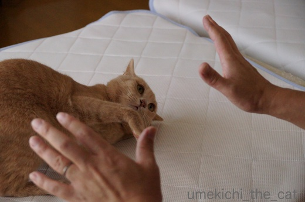
思い切り姿勢を低く！

![[猫]](https://blog.ss-blog.jp/_images_e/101.gif) がぶや！がぶがぶ！！
がぶや！がぶがぶ！！
梅吉の大好きな遊び、おとーさんとのプロレス。
おかーさんとじゃらしでまったり遊ぶのも良しなのですが
なんや あぐれっしぶにあそびたいわ〜
な気分の時は自分からおとーさんの足にがぶがぶして誘いに行きます(⌒_⌒;

ひっさつがぶやで〜！
お耳がなくなってますよ。
戦う時、相手にかじられない様に（おとーさんはかじりませんよ）お耳を畳むのでしょうか。

戦いの最中なのにお腹をなでなでされたらうっとりしちゃうのが梅吉プロレスの特徴です。

ええかんじやで〜
と言いながらあんよはいつでも蹴りを入れられる様なポジショニング^^;

うっとりしていたのに突然「ハッ」と我に返って再ファイト。
抱え込みのがぶ、決まりました！
今日からお盆休みに入った我が家。
これから毎朝こんな光景が繰り広げられそうな予感です。
 ↑ガブッと一押し↑
↑ガブッと一押し↑

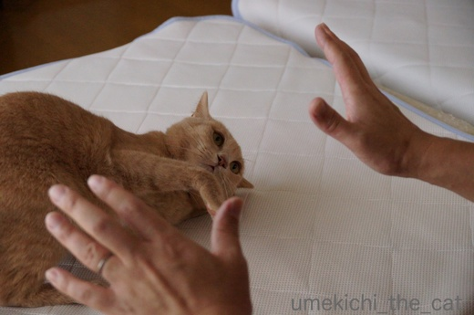
思い切り姿勢を低く！

梅吉の大好きな遊び、おとーさんとのプロレス。
おかーさんとじゃらしでまったり遊ぶのも良しなのですが
な気分の時は自分からおとーさんの足にがぶがぶして誘いに行きます(⌒_⌒;

お耳がなくなってますよ。
戦う時、相手にかじられない様に（おとーさんはかじりませんよ）お耳を畳むのでしょうか。

戦いの最中なのにお腹をなでなでされたらうっとりしちゃうのが梅吉プロレスの特徴です。

と言いながらあんよはいつでも蹴りを入れられる様なポジショニング^^;

うっとりしていたのに突然「ハッ」と我に返って再ファイト。
抱え込みのがぶ、決まりました！
今日からお盆休みに入った我が家。
これから毎朝こんな光景が繰り広げられそうな予感です。
タグ：プロレス
くつろぎポーズ色々 [梅吉]
おくつろぎ中の梅吉さん。

もう少し楽な姿勢がありそうなものですがこれはこれで良い感じみたいです。

これも良く見る首を突き出したポーズ。ぐえっとなっていそうですが大丈夫な様です。

そして一番のくつろぎポーズと言えるのが両手を突き出したこのかたち。

しょっちゅうこのポーズのまま寝てしまいます。
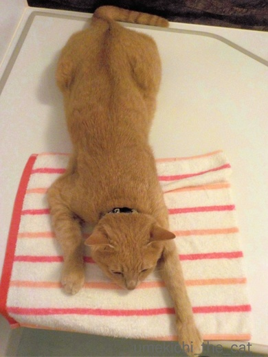
ワンハンドも有りww
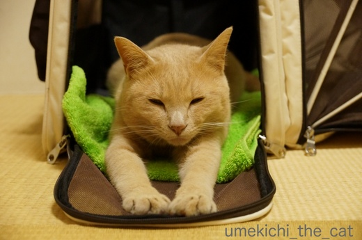
手を前にびょ〜んと伸ばして
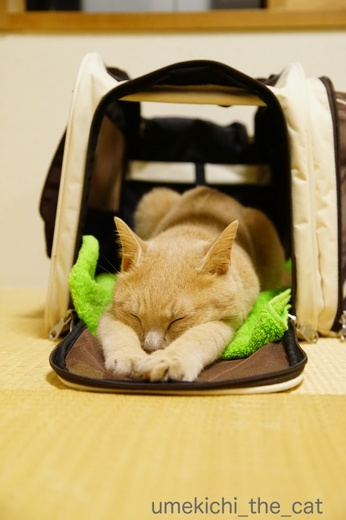
おやすみなさ〜い。
手を前に伸ばすと気持ちが良いのでしょうか。
ニンゲンだと「あ〜、腰が伸びて気持ちが良い！」みたいな感覚？
羽を伸ばしてくつろぐ、と言いますが梅吉は手を伸ばしてくつろぎます＾＾
にゃんこの皆さん、本当にそれでくつろいでる？というポーズがそれぞれにありそうですね。
↑ガブッと一押し↑

もう少し楽な姿勢がありそうなものですがこれはこれで良い感じみたいです。

これも良く見る首を突き出したポーズ。ぐえっとなっていそうですが大丈夫な様です。

そして一番のくつろぎポーズと言えるのが両手を突き出したこのかたち。

しょっちゅうこのポーズのまま寝てしまいます。
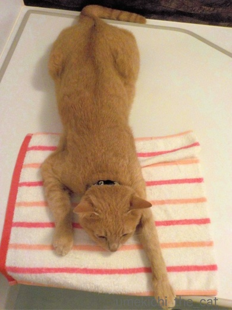
ワンハンドも有りww
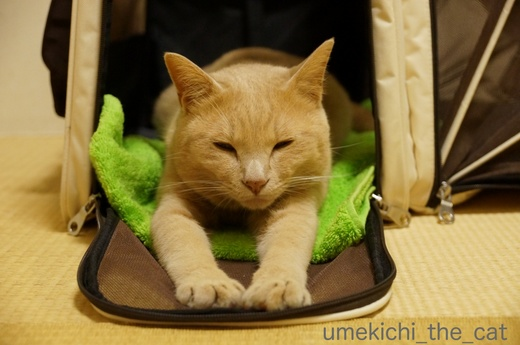
手を前にびょ〜んと伸ばして
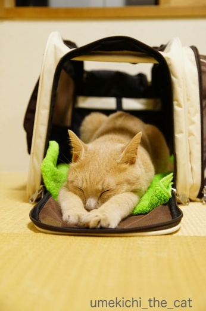
おやすみなさ〜い。
手を前に伸ばすと気持ちが良いのでしょうか。
ニンゲンだと「あ〜、腰が伸びて気持ちが良い！」みたいな感覚？
羽を伸ばしてくつろぐ、と言いますが梅吉は手を伸ばしてくつろぎます＾＾
にゃんこの皆さん、本当にそれでくつろいでる？というポーズがそれぞれにありそうですね。
わしゃわしゃも場所次第 [梅吉]
ベッドの上から動こうとしないのでタオルをかけるとまったりしちゃった梅吉さん。

頭から首回りをわしゃわしゃわしゃ・・・・・

気持ち良いのかな？満足そうです＾＾
一方、腰ポンポイントより下のおしっぽの付け根をわしゃわしゃすると

アワアワアワアワー！

ギャワワワワワワー！！
と変な声出ちゃいました（^▽^;)
「カフーッ」とため息みたいな声も出るしここは嫌いなポイントなのでしょうか。

わしゃわしゃはくびまわりとこしだけにしてや。
にゃんこのしっぽ周り付近には 馬尾（ばび）という神経の束が集まっていて
ツボに相当する部分な様ですね。
梅吉の場合はしっぽ周りの腰に近い方は気持ちの良いツボ、
付け根付近は「触っちゃいや〜ん」なツボみたいです。
あんな変な声聞いたの初めてだったのでびっくりしたけど笑っちゃいました。
カメラが動画モードじゃなくて残念！
↑ガブッと一押し↑

頭から首回りをわしゃわしゃわしゃ・・・・・

気持ち良いのかな？満足そうです＾＾
一方、腰ポンポイントより下のおしっぽの付け根をわしゃわしゃすると


と変な声出ちゃいました（^▽^;)
「カフーッ」とため息みたいな声も出るしここは嫌いなポイントなのでしょうか。

にゃんこのしっぽ周り付近には 馬尾（ばび）という神経の束が集まっていて
ツボに相当する部分な様ですね。
梅吉の場合はしっぽ周りの腰に近い方は気持ちの良いツボ、
付け根付近は「触っちゃいや〜ん」なツボみたいです。
あんな変な声聞いたの初めてだったのでびっくりしたけど笑っちゃいました。
カメラが動画モードじゃなくて残念！
炭水化物Love [梅吉]


梅吉はお米が大好き。
我が家ではお米はペットボトルに移し替えて冷蔵庫で保管しているのですが
移し替え作業を始めるとどこにいても飛んでくるカフェオレ色。

ちょっとー、袋はかじらんといてー！

顔入れんといてーっ！！（ふきんも踏まんといてやっ

こぼれるーーー！！！
生米なんて食べさせたこと無いのにすごい執着心です。
炊いたお米には猫パンチを繰り出してきてごはん粒をゲットしようとします。
一度、炊きたてご飯で熱かったのかびっくりした顔をして
必死に肉球を舐めていたこともありました (^▽^;)
いくらねだられても猫にとって穀類は消化しにくい食べ物と聞くので
絶対にあげませんよー、梅吉さん。
かわりに袋を差し上げましょう＾＾

猫も大好きゆめぴりか、なんてー(≧艸≦)
私はホクレンの回し者ではありませんよ。
お米の他はパンが大好き。パスタの乾麺を出しておくとかじっちゃうし。
飼い主に似て炭水化物好きなのでしょうか。
プールデビュー [梅吉]
梅吉さんにも水辺で涼をとってもらいましょう！とプールを買ってみました。
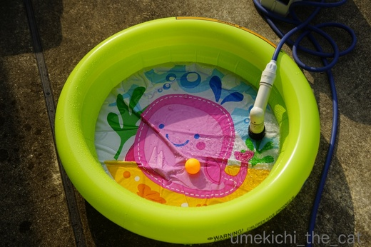
お水を入れてピンポン球を浮かべてみると

及び腰ならが早速やってくるカフェオレ色。

まずお水を味わって

ん？あれはなんや

出ました！これが私を籠絡した鼻チューです![[黒ハート]](https://blog.ss-blog.jp/_images_e/136.gif)

ほ〜ら、パシャパシャですよ〜。

え〜〜！まさかもう興味なし！？

じゃあ、これでどうだ！
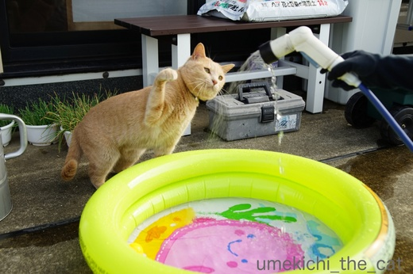
うめきちぱんち いくでーっ
思ったほどのアクティブさはありませんでしたが
少しはお水遊びを楽しんでくれた様です。次はプールにinしてみようっと。
陽の陰った時間にベランダに出ましたがそれでもとんでもなく暑い。
ゆっくり遊びたいものの10〜15分くらいが限界です。
ひともにゃんこも熱中症になったら大変なので早々に切り上げたベランダ遊びでした。
↑ガブッと一押し↑
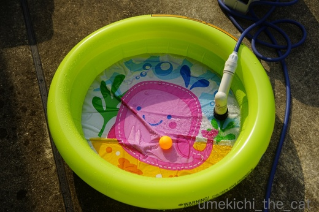
お水を入れてピンポン球を浮かべてみると

及び腰ならが早速やってくるカフェオレ色。

まずお水を味わって


出ました！これが私を籠絡した鼻チューです

ほ〜ら、パシャパシャですよ〜。

え〜〜！まさかもう興味なし！？

じゃあ、これでどうだ！
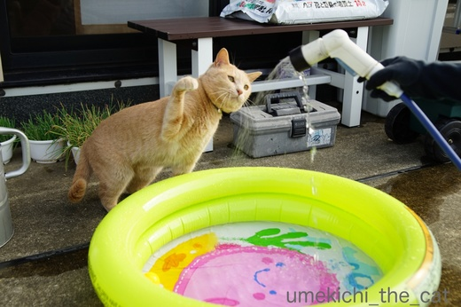
思ったほどのアクティブさはありませんでしたが
少しはお水遊びを楽しんでくれた様です。次はプールにinしてみようっと。
陽の陰った時間にベランダに出ましたがそれでもとんでもなく暑い。
ゆっくり遊びたいものの10〜15分くらいが限界です。
ひともにゃんこも熱中症になったら大変なので早々に切り上げたベランダ遊びでした。
２回目のうちの子記念日＆ブログ１周年 [梅吉]
今日、7月26日は梅吉が我が家にやって来た2回目のうちの子記念日です![[ぴかぴか（新しい）]](https://blog.ss-blog.jp/_images_e/150.gif)
ねこの保護活動をしているNPO法人の里親会に出かけたのが7月19日。
引き取るのはどの子でも良かったのですがそんな答えじゃ主催者側も困っちゃうだろうから
第一希望（！！）仮名：みかんちゃん（メス）
第二希望（！！！）仮名：小太郎くん（オス）にエントリー。
翌日保護団体から「小太郎をお願いしたい」と連絡があり
この「小太郎くん（仮）」が我が家の梅吉となりました(๑˃̵ᴗ˂̵)و

梅吉きたーーーーーっ！（既出の写真ですが）
ちっさ〜い、はかなげ〜Ｏ(≧▽≦)Ｏ でも、イカ耳w
怯えるでも隠れるでもなく「ようおこし！」のささみをパクパク食べて
（お届けしてくれたNPOの方は、食が細い、って言ってたんだけど^^;）
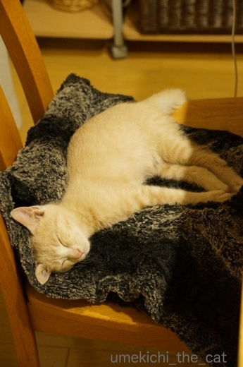
用意したトレイに早速おしっこをして
私の横の椅子に置いた毛布の上でスヤスヤ眠り始めました。
大物やな。

やんちゃに遊びまわって

冬はぬくぬくとお膝の上で
（12秒です）
今時の子らしく動画を楽しんで
じぶんがいっちゃんすっきやねん！

夏でも家族にくっついて
（19秒です）
お水遊びを楽しんで

一人の時はのびのびと。
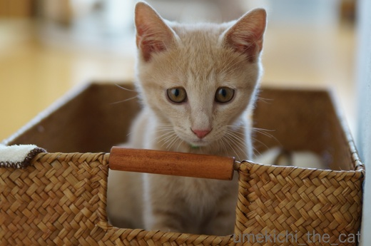
こんなにあどけなかった梅吉は

遊んで欲しいのにいつまでも写真を撮っているおかーさんにふて顔を見せる様になりました(≧艸≦)
そして昨年の梅吉うちの子記念日にスタートしたこのブログも１周年となりました。
たくさんの方にnice!やコメントをいただいて本当にありがたいことです。
今後もあまり代わり映えのしない梅吉話のブログになりますがどうぞよろしくお願い致します。
梅吉さんからも一言。

よろしくにゃーーーーーー！
↑ガブッと一押し↑
ねこの保護活動をしているNPO法人の里親会に出かけたのが7月19日。
引き取るのはどの子でも良かったのですがそんな答えじゃ主催者側も困っちゃうだろうから
第一希望（！！）仮名：みかんちゃん（メス）
第二希望（！！！）仮名：小太郎くん（オス）にエントリー。
翌日保護団体から「小太郎をお願いしたい」と連絡があり
この「小太郎くん（仮）」が我が家の梅吉となりました(๑˃̵ᴗ˂̵)و

梅吉きたーーーーーっ！（既出の写真ですが）
ちっさ〜い、はかなげ〜Ｏ(≧▽≦)Ｏ でも、イカ耳w
怯えるでも隠れるでもなく「ようおこし！」のささみをパクパク食べて
（お届けしてくれたNPOの方は、食が細い、って言ってたんだけど^^;）
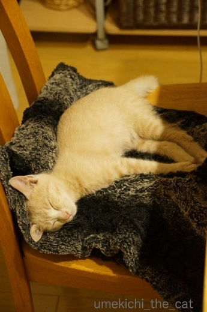
用意したトレイに早速おしっこをして
私の横の椅子に置いた毛布の上でスヤスヤ眠り始めました。
大物やな。

やんちゃに遊びまわって

冬はぬくぬくとお膝の上で
（12秒です）
今時の子らしく動画を楽しんで

夏でも家族にくっついて
（19秒です）
お水遊びを楽しんで

一人の時はのびのびと。
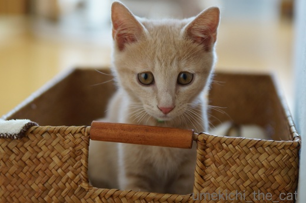
こんなにあどけなかった梅吉は

遊んで欲しいのにいつまでも写真を撮っているおかーさんにふて顔を見せる様になりました(≧艸≦)
そして昨年の梅吉うちの子記念日にスタートしたこのブログも１周年となりました。
たくさんの方にnice!やコメントをいただいて本当にありがたいことです。
今後もあまり代わり映えのしない梅吉話のブログになりますがどうぞよろしくお願い致します。
梅吉さんからも一言。

やっぱりじゃらしが好き！ [梅吉]
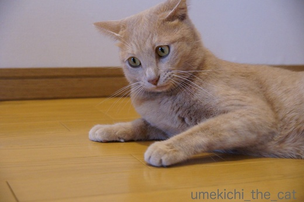
きろんっ![[目]](https://blog.ss-blog.jp/_images_e/84.gif)

じ〜っ
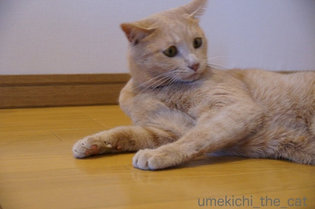
じ〜〜っ

まてまてー！
梅吉さんが真剣に見つめていたのは
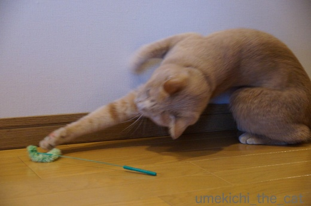
このグリーンのねこじゃらし。
梅吉を我が家に迎える時に買った「いわゆる普通のねこじゃらし」が壊れてしまったので
「エノコログサ風」なこのじゃらしを買ってみました。
竿の部分がワイヤーなのでびょんびょんと反動がつくのが面白いのかな。


夢中で遊んでおります！
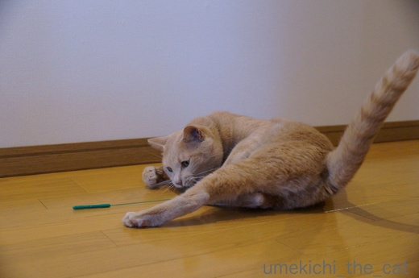
おしっぽぴーーーーーんっ！！
きまぐれなお猫様だからその時々でお気に入りは変わりますが
やっぱりじゃらしへの食いつきは抜群ですね＾＾
このじゃらし、じゃらし部分に針金が仕込んであるので折れを繰り返しているうちに
ポッキリいきそうでもありますが・・・・・
↑ガブッと一押し↑

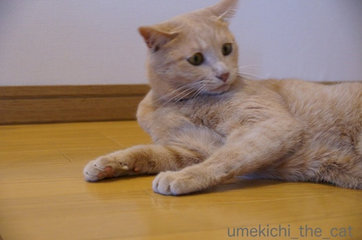

梅吉さんが真剣に見つめていたのは
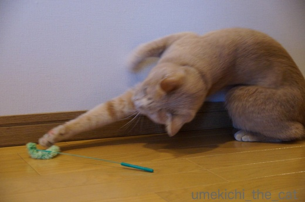
このグリーンのねこじゃらし。
梅吉を我が家に迎える時に買った「いわゆる普通のねこじゃらし」が壊れてしまったので
「エノコログサ風」なこのじゃらしを買ってみました。
竿の部分がワイヤーなのでびょんびょんと反動がつくのが面白いのかな。


夢中で遊んでおります！
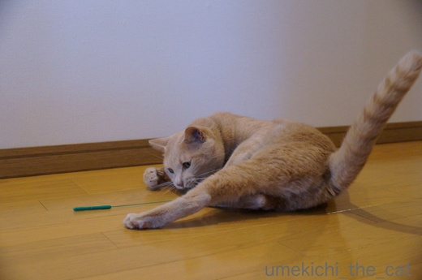
おしっぽぴーーーーーんっ！！
きまぐれなお猫様だからその時々でお気に入りは変わりますが
やっぱりじゃらしへの食いつきは抜群ですね＾＾
このじゃらし、じゃらし部分に針金が仕込んであるので折れを繰り返しているうちに
ポッキリいきそうでもありますが・・・・・
抜け毛総決算 [梅吉]
先週末の３連休、これだけ暑かったら早く乾くよね、と梅吉をシャンプーしました。
そろそろ抜け毛も落ち着いて来たのでさらにスッキリしちゃいましょう！

シャンプー係のおっとが準備を始めるとバスルームをびっくりまなこで伺う梅吉さんww
なんやめっちゃいやなよかんや。

きのせいや、きのせいや・・・・・

でも目を逸らせない梅吉さんwwさらに近寄ってガン見(≧艸≦)
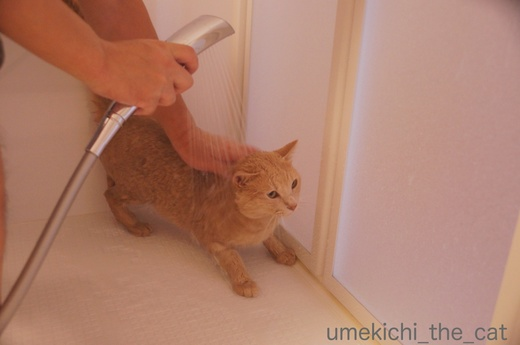
梅吉さんの動物的カンはよく当たりますねー。
はい、シャワーですよー。

みょ〜〜んと伸びて
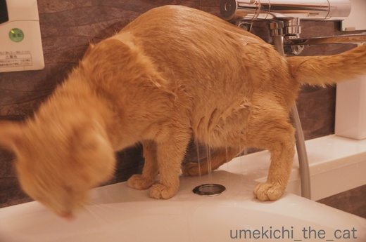
おかーさんのそばにきて身震い！
わ〜、びょしょぬれになるからやめて〜。これは絶対嫌がらせだな。

次はあわあわですよ。

わわ、あわあわのまま近づいてこないでください![[あせあせ（飛び散る汗）]](https://blog.ss-blog.jp/_images_e/162.gif)

キラ〜ン
あわあわで身震いはや〜め〜て〜
この後は二人掛かりでしっかりすすぎ。
充分タオルドライした後はあちこち動き回りながら一生懸命に舐めていました。
シャンプー後挙動不審になるのは相変わらずです。

疲れて白目寝。おつかれさん。
梅雨明けになりましたね。
今日の予報では我が家の辺りは37℃と言っていたので覚悟して外に出たのですが
あれ？以外に平気。
どうやら予報ほど高温にはならなかった様です。
大阪はいつまでも猛暑日が続いて熱帯夜も一月くらい続くのはザラなのに
全国一暑かった！とニュースになることがないんですよね。なんか悔しい( ･̆ˍ･̆ )
↑ガブッと一押し↑
そろそろ抜け毛も落ち着いて来たのでさらにスッキリしちゃいましょう！

シャンプー係のおっとが準備を始めるとバスルームをびっくりまなこで伺う梅吉さんww


でも目を逸らせない梅吉さんwwさらに近寄ってガン見(≧艸≦)
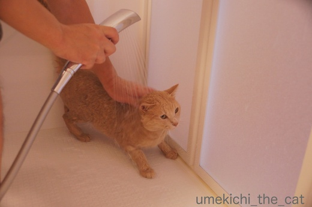
梅吉さんの動物的カンはよく当たりますねー。
はい、シャワーですよー。

みょ〜〜んと伸びて
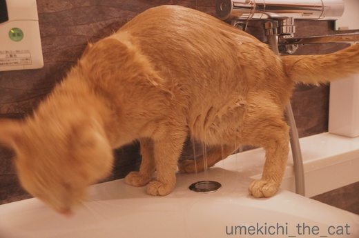
おかーさんのそばにきて身震い！
わ〜、びょしょぬれになるからやめて〜。これは絶対嫌がらせだな。

次はあわあわですよ。

わわ、あわあわのまま近づいてこないでください

あわあわで身震いはや〜め〜て〜
この後は二人掛かりでしっかりすすぎ。
充分タオルドライした後はあちこち動き回りながら一生懸命に舐めていました。
シャンプー後挙動不審になるのは相変わらずです。

疲れて白目寝。おつかれさん。
梅雨明けになりましたね。
今日の予報では我が家の辺りは37℃と言っていたので覚悟して外に出たのですが
あれ？以外に平気。
どうやら予報ほど高温にはならなかった様です。
大阪はいつまでも猛暑日が続いて熱帯夜も一月くらい続くのはザラなのに
全国一暑かった！とニュースになることがないんですよね。なんか悔しい( ･̆ˍ･̆ )
エアコンの恩恵 [梅吉]
夜の気温も25℃以上の熱帯夜が続き本格的に暑くなって来た大阪です。
３日ほど前からリビングのエアコンは梅吉のためにも一日中つけっぱなし。
冷やしすぎも良くないので日中のリビングの温度は大体29〜30℃くらいになる様な設定。
動いて汗をかくくらいが我が家の室内の適温です。
通常生活している範囲の温度が29〜30℃ということは人間の頭より上の場所は
もっと温度が高いはずなのですが・・・
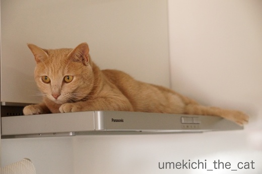
暑くても上を目指す漢、梅吉。
お湯を沸かしたり調理をしている時でもレンジフードの上に陣取ります。
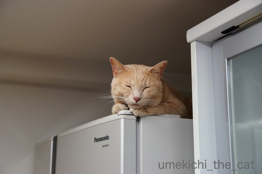
冷蔵庫の上も好き。（冬限定かと思っていたら違った・・・）
冷蔵庫の上ってモーターみたいの付いているから熱いんですけど・・・・・
この写真は満足そうなお顔ですが、魂が抜けた様にトオイメの時も。
正直暑いんじゃないですか？(^▽^;)

日当たりの良い窓の下も最近ブームの場所。
エアコン直下すぎて冷気は届かずしかも狭い。
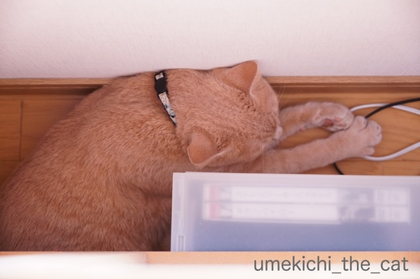
先ほどの写真、上から頭部分を見るとこんな感じです。
体勢にも無理がありあり、暑い＆狭いで苦行の様ですww
とことん自分を追い込んで一体どうするつもりでしょうか・・・・・
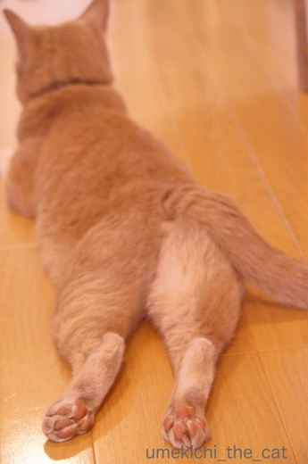
そんな漢、梅吉も暑さMAXになるとエアコンの冷気はあまり届きませんが
ちょっと涼しい廊下で cool down。放熱ポイントはあちの肉球の様です。
両肉球ともにきっちり上向きーーーー！Ｏ(≧▽≦)Ｏ
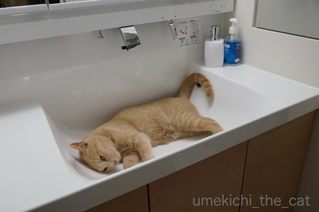
さらに涼を求める時は洗面ボールへgo！

あせかくのもたいせつや。せやけどひやす のもひつようやで。
と、涼をとるにもナチュラルな方法であまりエアコンの恩恵を受けようとは思っていない様です。
エアコンつけっぱなしは梅吉のための様なものなのに・・・
飼い主が思うよりも寒がりなのかな？
冷風を浴び続けるよりも健康的なんですけどね＾＾
でも朝の洗面ボール占拠はやめて〜。
↑ガブッと一押し↑
３日ほど前からリビングのエアコンは梅吉のためにも一日中つけっぱなし。
冷やしすぎも良くないので日中のリビングの温度は大体29〜30℃くらいになる様な設定。
動いて汗をかくくらいが我が家の室内の適温です。
通常生活している範囲の温度が29〜30℃ということは人間の頭より上の場所は
もっと温度が高いはずなのですが・・・
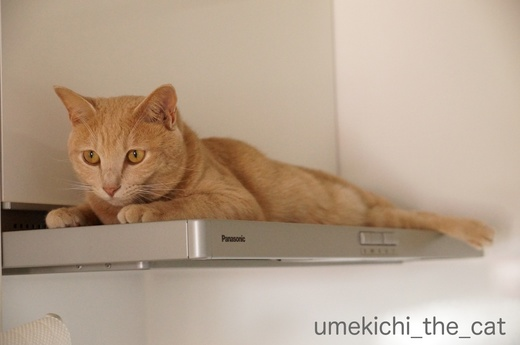
暑くても上を目指す漢、梅吉。
お湯を沸かしたり調理をしている時でもレンジフードの上に陣取ります。
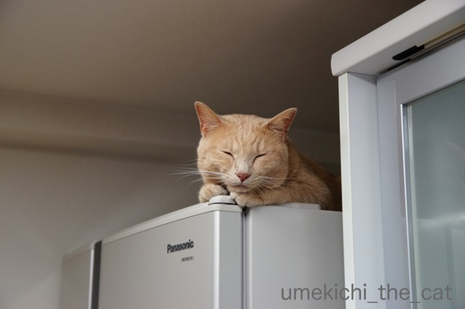
冷蔵庫の上も好き。（冬限定かと思っていたら違った・・・）
冷蔵庫の上ってモーターみたいの付いているから熱いんですけど・・・・・
この写真は満足そうなお顔ですが、魂が抜けた様にトオイメの時も。
正直暑いんじゃないですか？(^▽^;)

日当たりの良い窓の下も最近ブームの場所。
エアコン直下すぎて冷気は届かずしかも狭い。
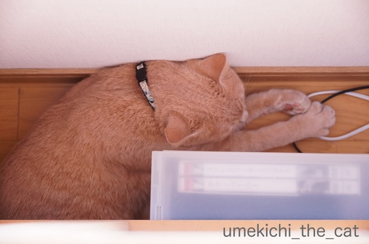
先ほどの写真、上から頭部分を見るとこんな感じです。
体勢にも無理がありあり、暑い＆狭いで苦行の様ですww
とことん自分を追い込んで一体どうするつもりでしょうか・・・・・
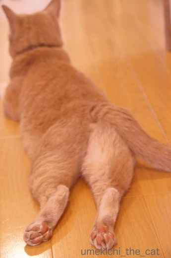
そんな漢、梅吉も暑さMAXになるとエアコンの冷気はあまり届きませんが
ちょっと涼しい廊下で cool down。放熱ポイントはあちの肉球の様です。
両肉球ともにきっちり上向きーーーー！Ｏ(≧▽≦)Ｏ
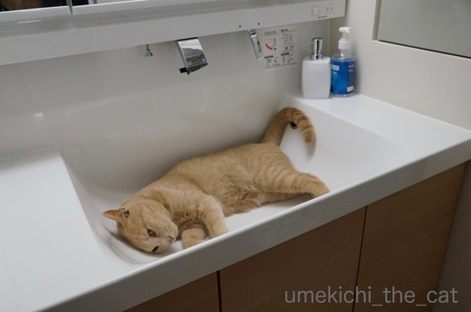
さらに涼を求める時は洗面ボールへgo！

と、涼をとるにもナチュラルな方法であまりエアコンの恩恵を受けようとは思っていない様です。
エアコンつけっぱなしは梅吉のための様なものなのに・・・
飼い主が思うよりも寒がりなのかな？
冷風を浴び続けるよりも健康的なんですけどね＾＾
でも朝の洗面ボール占拠はやめて〜。
あほっさ [梅吉]
「あほっさ」ってなによ？ですよねー(≧▽≦)
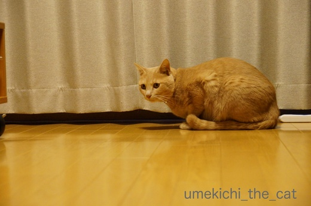
じっとしているな、と思ったら

突然びょ〜ん。
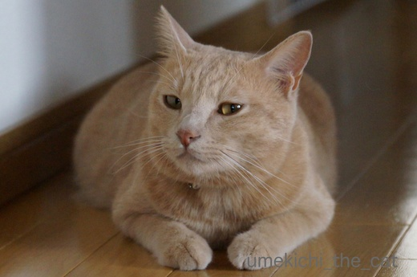
まったりしているな、と見ていたら

突然走る！
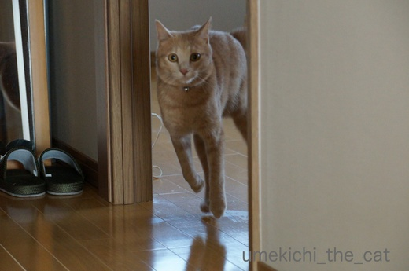
走る！！
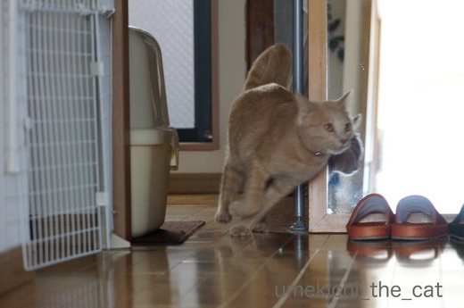
走り過ぎ〜！！！

じゃあ、わし、とぶで！！！！
・・・・・・と梅吉は（他のお家のにゃんずさんもですよね？）突然火がついた様に走り出します。
走るだけでは物足りないのか窓枠をよじ登るという垂直運動も含まれます。
一体この行動はなんなのでしょう(･◇･)
夕方以降に多い様な気がするので狩の行動なのかなぁ。
我が家ではこの行動を「あほ」な「発作」＝「あほっさ」と呼んでいます(*>艸<)
↑ガブッと一押し↑
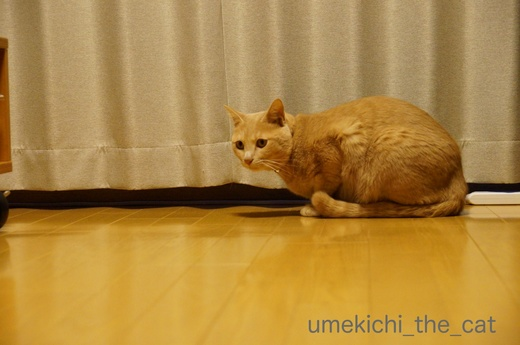
じっとしているな、と思ったら

突然びょ〜ん。
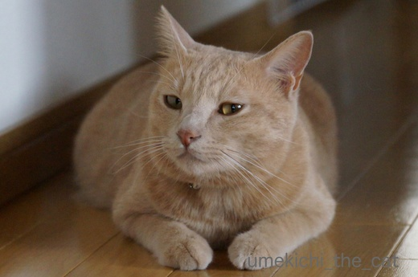
まったりしているな、と見ていたら

突然走る！
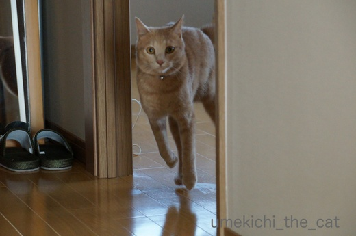
走る！！
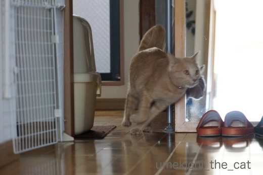
走り過ぎ〜！！！

・・・・・・と梅吉は（他のお家のにゃんずさんもですよね？）突然火がついた様に走り出します。
走るだけでは物足りないのか窓枠をよじ登るという垂直運動も含まれます。
一体この行動はなんなのでしょう(･◇･)
夕方以降に多い様な気がするので狩の行動なのかなぁ。
我が家ではこの行動を「あほ」な「発作」＝「あほっさ」と呼んでいます(*>艸<)
タグ：あほっさ

カフェオレ色の梅吉

梅吉 2023年8月10日 永眠


梅吉と出会った譲渡会

犬猫の理由なき殺処分ゼロ
妄想広告
UMEKICHI 光

爆発的に早い！
時々攻撃的！
Thanks to Mr.Boss365
爆発的に早い！
時々攻撃的！
Thanks to Mr.Boss365